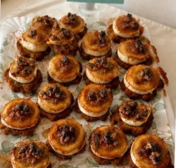
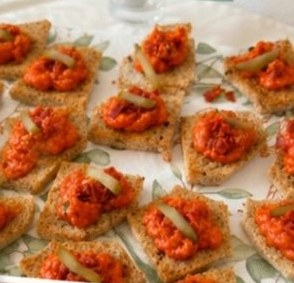
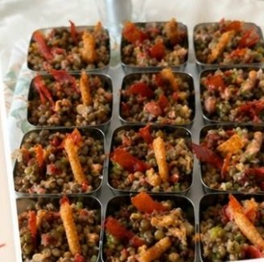
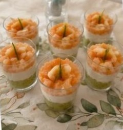
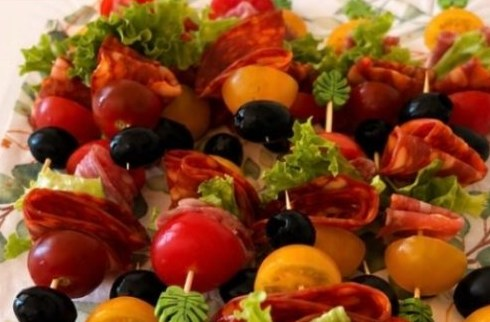
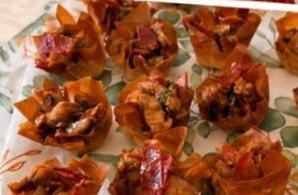
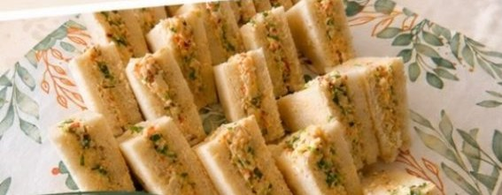
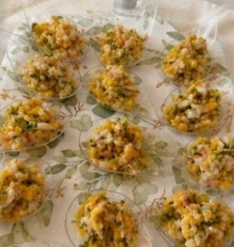

Végétarien
Toasts chèvre, miel & noix
Chèvre fondant sur pain grillé, filet de miel et noix concassées.
Un aperçu de mes créations. Chaque menu est composé avec vous, selon l'occasion et la saison.

Chèvre fondant sur pain grillé, filet de miel et noix concassées.

Tapenade de poivrons rôtis et sobrasada, la touche espagnole.

Salade de lentilles, petits légumes et touche croustillante.

Crème d'avocat, mousse légère et crevettes.

Chorizo, tomates cerises et olives noires.

Croustillants de pâte fine garnis de viande épicée.

Petits sandwichs moelleux, surimi et herbes fraîches.

Petits légumes croquants et mangue, en cuillères.
Saucisses mijotées en sauce tomate, oignons, ail, thym et piment doux.
Poulet mijoté aux épices, curcuma et feuilles de cari, riz blanc.
Petits beignets croustillants de pois cassés, parfaits à l'apéritif.
Légumes croquants marinés au curcuma, à la moutarde et au piment.
Nouilles sautées aux légumes et au poulet, façon street-food mauricienne.
Douceur à la patate douce et à la noix de coco.
L'omelette espagnole aux pommes de terre et oignons fondants.
Croquettes crémeuses au jambon, panure croustillante.
Pain grillé, tomate fraîche, huile d'olive et fleur de sel.
Petits pains briochés, garnitures au choix pour vos buffets.
Ces plats sont des exemples. Allergies, régimes et envies particulières sont pris en compte sur demande.
Envie d'un mélange d'apéritif, de plats mauriciens et de classiques ? On compose ensemble le buffet qui vous ressemble.